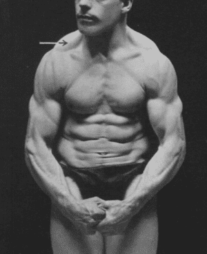

< < < Back
How To Make Your Chest Muscles Stand Out With Maxalding – Return Of Kings
I didn’t plan on this, but here’s my 2nd Bloodsport reference in as many weeks. If you ever wanted the iron man boobs of Chong Li, now you can get them! Yes, ladies (LOL) and gentlemen, it is time once again for another article on the subject of the great Maxick and his system of muscle control!
As you will recall from my two previous articles on the man, “muscle control” is a very specific type of training that serves to, essentially, create a greater “connection” between your muscles and your central nervous system, giving you the ability to flex and manipulate many of the muscles that you wouldn’t think were capable of manipulation.
In doing so, you will have greater control over those muscles–and thus greater strength. While I don’t think even Maxick himself would argue that his techniques will turn a manlet into a world-beater, I would argue that using muscle control can give you a little extra “kick” in your lifts, giving you the ability to lift an extra 5-10 pounds when you couldn’t before. Besides, the flexing does look pretty damn cool

In my previous two articles I discussed the beginner’s total body flexion to get the feel of loosening and tensing the muscles, and the flexing of the two powerful muscles on the back of the torso: the latissimus dorsi and the trapezius. Now, this series will deal with the next muscle to be controlled: the pectoralis major.
These are, of course, the great, powerful muscles on the front of your torso, the muscles that are utilized in any movement that can be remotely considered “pushing”: push-ups, punching, swinging a baseball bat, all of these use the pectoralis major. And today, you’ll be learning how to isolate and control them.
Of course, many men that are into physical culture can already flex their pectoral muscles without any specific Maxalding training. In fact, it is likely one of the first muscles that any athlete will inadvertently learn how to control. However, for the sake of completion (and for those who are not so blessed), I will include it in this series.
Before you can flex the pectorals without arm movement, one must of learn how to do so WITH arm movement:
Go in front of a mirror, and bring the arms together as shown in the picture.
Then strain the chest as if you were going to bring your elbows together, whilst simultaneously pulling apart with your arms. You should be able to see the contraction in the mirror. Once you have secured contraction—i.e. the contraction is visible—slowly decrease the pressure of the hands, retaining the muscular contraction in your chest.
After you have been practicing this for a few days, combined with concentration of your will, you will be able to isolate and contract the pectoralis major muscles without any arm or hand movement at all.
Once you have accomplished this, you are almost done with training pectoralis major isolation. There’s just one more exercise you need to practice.
Begin with contracting the pectoralis major muscles without any hand or arm movement or clasping, as you have already practiced doing. Having mastered pectoral s major contraction without any movement of any other limbs, slowly bring the arms up and make them extend horizontally from the shoulders, while still retaining the pectoralis major contraction.
If this is successfully accomplished, then you should notice that not only the does the sternal portion of the pectoralis major flex (that’s the big, fan shaped muscle on your chest that most people simply refer to as the pectoral), but the clavicular portion—which is to say, the smaller part of the pectoralis major that connects to the clavicle, will also notably flex.
Allow Maxick to show you this effect, as his photographs are a lot better than mine would be:
As you can see, the part of his pectorals that connects to the clavicle are noticeably flexing.
I should point out that, unless you have as low a bodyfat percentage as Maxick, the effect will likely not be as pronounced and easily visible. However, being in a well lit room with a mirror should be sufficient enough to see the flexion. And if not, I would recommend slightly bending over at the waist until you can see the effect.
And with that, you have learned to control your pectoral muscles.
Read More: How To Control Your Shoulders With Maxalding